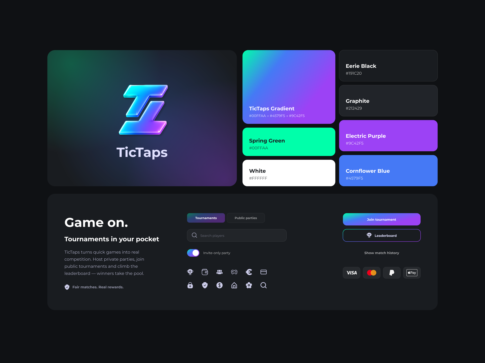

Joined at an early production stage.
TicTaps already had an initial design direction, but the interface needed to feel more modern, consistent and easier to build. The team needed a cleaner visual direction, a stronger design system and production-ready components for both iOS and Android.
Bold gaming visuals on a scalable system.
The existing UI was inconsistent and hard to extend. The challenge was making the interface feel energetic and playful while keeping it structured enough to build from - and to hand off cleanly to a development team.
Product audit
Reviewed existing Figma screens, structure and UI kit to find what to rebuild.
Flow refinement
Mapped journeys across games, parties, friends, leaderboard and wallet with the PM.
UI redesign
Cleaner layouts, stronger hierarchy and a bold gaming visual direction.
System & handoff
Rebuilt the UI kit with components, tokens and mobile patterns.
Gaming-first - bold, social, energetic.
The product needed to feel gaming-first while staying structured enough to scale. Bright gradients, neon accents and strong typographic hierarchy give TicTaps its personality without making it chaotic.
One scalable kit, iOS & Android.
The UI kit was rebuilt as a scalable design system - logo, gradient and color palette, reusable components and mobile patterns, with clear tokens and naming conventions for handoff.

A full launch asset suite.
I created the full App Store and Google Play asset suite - screenshots, feature graphics and promotional banners formatted to each store's specifications - alongside a responsive landing page ahead of launch.

Around 50 mobile screens, updated user flows, a rebuilt UI kit and production-ready components. Store assets are complete; development is in progress, with the app preparing for launch.
Closer to development than usual.
This project made me more intentional about how I structure and name components - small decisions that matter a lot during handoff. Working directly with developers and another designer pushed me to think beyond the screen and consider how the system would actually be built.